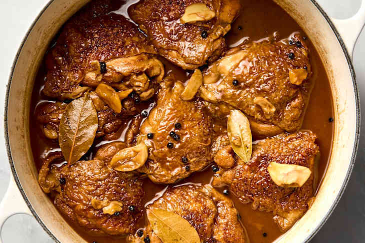

Chicken Adobo

Description
Chicken adobo, known as adobong manok in Filipino, is a classic and beloved Filipino dish.
It's a braised chicken dish featuring chicken pieces marinated and stewed in a savory and tangy
sauce made primarily of vinegar, soy sauce, garlic, bay leaves, and peppercorns. The dish is known
for its balance of salty and sour flavors, often with a hint of sweetness.
Ingredients
- 3 pounds bone-in chicken thighs, drumsticks, or a combination
- 5 cloves garlic
- 1/2 teaspoon kosher salt
- 1 tablespoon neutral oil, such as canola
- 3 dried bay leaves
- 2 teaspoons whole black peppercorns
- 2 cups water
- 1/2 cup soy sauce, preferably a Filipino brand like
Silver Swan
- 1/3 cup
cane vinegar
- 3 tablespoons oyster sauce
- Steamed white rice, for serving
Steps
- Smash and peel 5 garlic cloves. Pat 3 pounds chicken thighs, drumsticks, or a combination dry
with paper towels. Season all over with 1/2 teaspoon kosher salt.
- Heat 1 tablespoon neutral oil in a Dutch oven or large heavy-bottomed pot over medium-high heat
until shimmering. Working in 2 batches, add the chicken to the pot (skin-side down if using
thighs). Sear until browned on all sides, about 6 minutes per batch (reduce the heat as needed
if starting to burn). Transfer to a plate.
- Place the garlic, 3 dried bay leaves, and 2 teaspoons whole black peppercorns in the pot. Stir
until the garlic cloves and peppercorns are slightly toasted and fragrant, 30 seconds to 1
minute. Add 2 cups water, 1/2 cup soy sauce, 1/3 cup cane vinegar, and 3 tablespoons oyster
sauce. Scrape up any browned bits from the bottom of the pot with a wooden spoon.
- Return the chicken and any accumulated juices on the plate to the pot, arranging the chicken in
a single layer (skin-side down if using thighs). Bring to a boil. Reduce the heat to maintain a
simmer. Cook uncovered until the chicken registers at least 165ºF in the thickest part, flipping
each piece over halfway through, about 20 minutes total. When the chicken is almost ready,
arrange a rack in the upper-third of the oven and heat the oven to broil. Line a rimmed baking
sheet with aluminum foil.
- Using tongs, transfer the chicken (skin-side up if using thighs) to the baking sheet. Continue
to let the sauce simmer on the stove. Broil the chicken until browned on top, about 3 minutes.
Remove the chicken from the oven, flip each piece, and brush with some of the sauce from the
pot. Return the chicken to the oven and broil until browned on the second side, about 3 minutes
more. Remove and discard the bay leaves if desired. Serve with steamed white rice and drizzle
heavily with the sauce.
Home